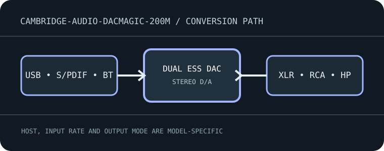

[ INDIVIDUAL MODEL // SOUND HARDWARE ]
Cambridge Audio DacMagic 200M
Desktop dual-DAC converter with USB, optical, coaxial and Bluetooth inputs, balanced/unbalanced line outputs and a headphone amplifier.

Model-specific specifications
| Exact model / architecture | Dual ESS ES9028Q2M DAC chips in a balanced dual-mono digital-to-analog design; integrated headphone amplification and selectable fixed/variable line output. |
|---|---|
| Digital inputs / interface | USB-B; two Toslink optical S/PDIF; two RCA coaxial S/PDIF; Bluetooth 5.0 receiver. USB is the high-rate asynchronous computer path. |
| Analog / digital outputs | Stereo balanced XLR and unbalanced RCA line pairs, plus front 6.35 mm headphone output. Line-level and headphone outputs are not interchangeable. |
| Supported formats and rates | USB: PCM through 32-bit/768 kHz and native DSD512/DoP as documented by Cambridge. Coaxial: PCM through 24-bit/192 kHz; optical: PCM through 24-bit/96 kHz. Bluetooth codec/rate is negotiated with the transmitter and does not carry USB-rate PCM/DSD. |
| Power | External 12 V DC, 2 A supply; use the supplied or exact-spec replacement adapter. USB does not power the DAC. |
| Drivers / host compatibility | USB Audio Class 2.0; install Cambridge Audio USB driver on Windows for supported high-rate playback. macOS and Linux use their host audio stack; confirm the selected output and playback mode. |
| Compatibility caveats | Optical inputs have a lower ceiling than USB/coax. The unit supports MQA decoding on wired digital inputs, but Bluetooth does not; verify source configuration, output mode and power supply before troubleshooting. |
Compatibility & preservation
Optical inputs have a lower ceiling than USB/coax. The unit supports MQA decoding on wired digital inputs, but Bluetooth does not; verify source configuration, output mode and power supply before troubleshooting.
- Record the exact product name, hardware revision, serial range, included power supply, firmware and driver version before service.
- Match digital sample format/rate to the selected physical input and host mode; set downstream amplifier level safely before playback.
- Keep the model-specific manufacturer manual with the device; connector shape alone does not guarantee electrical or protocol compatibility.
Manufacturer sources
- DacMagic 200M product specificationsManufacturer product documentation for the exact model and its revision-specific operation/specifications.
- Official DacMagic 200M user manualManufacturer product documentation for the exact model and its revision-specific operation/specifications.